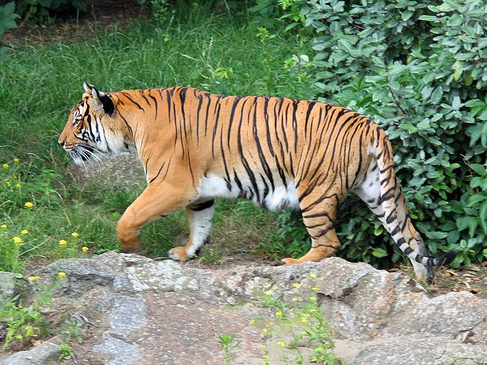
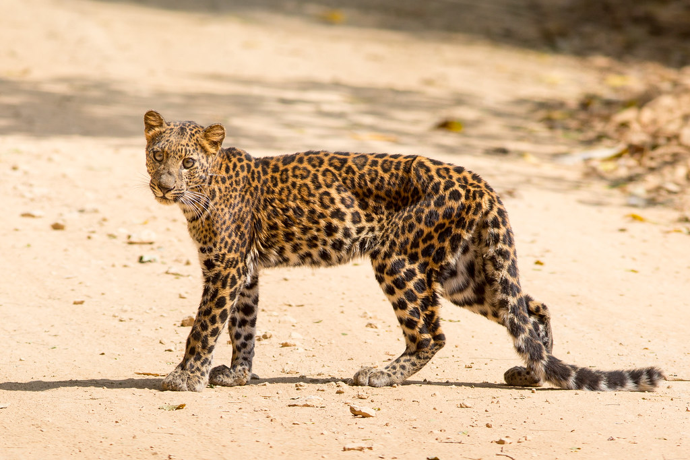
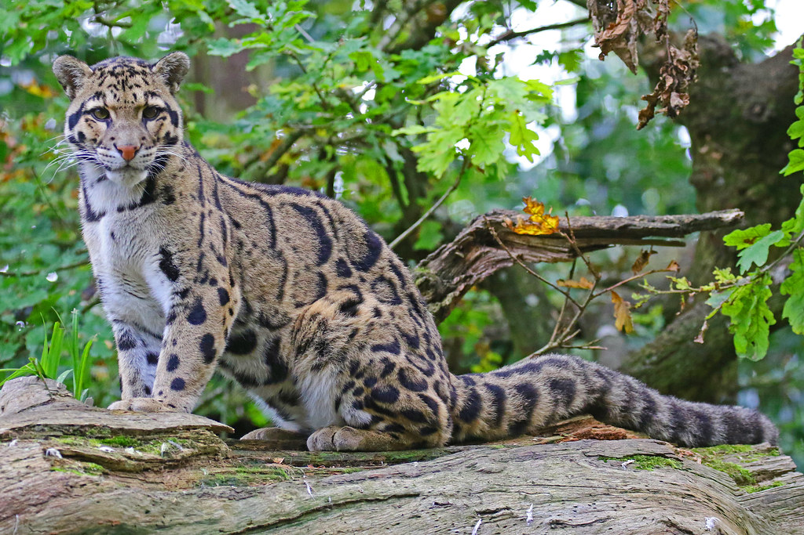
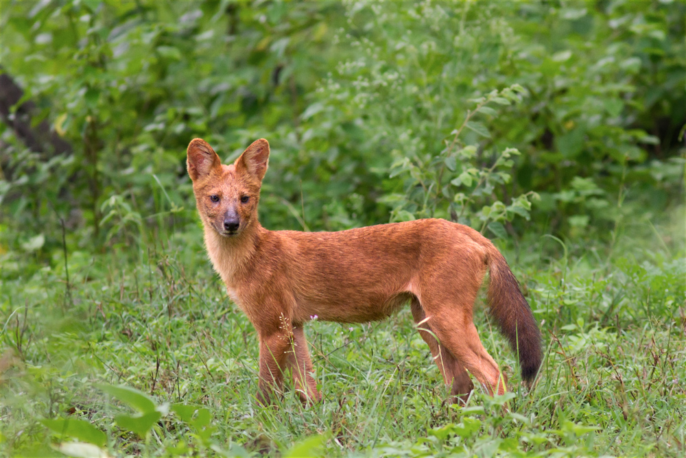
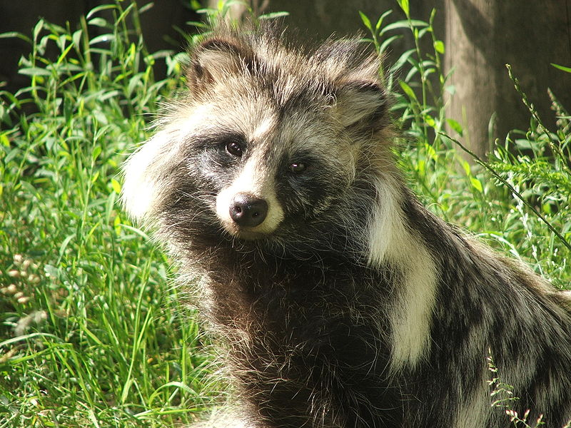
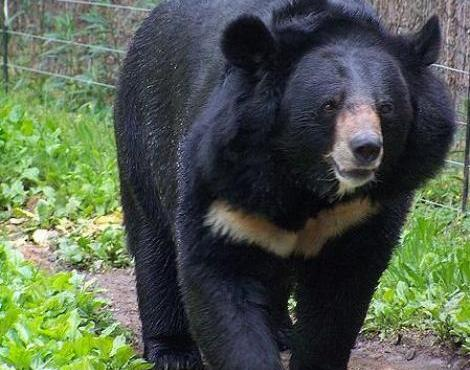
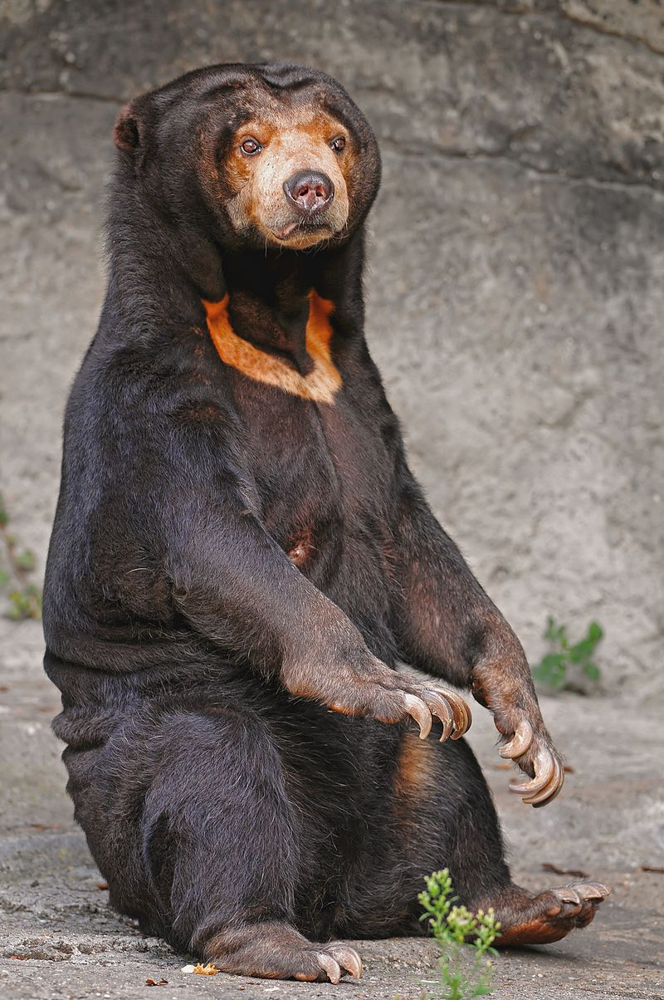
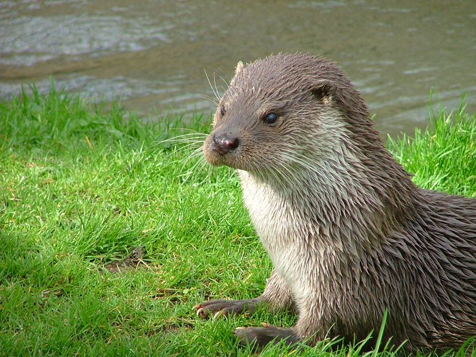
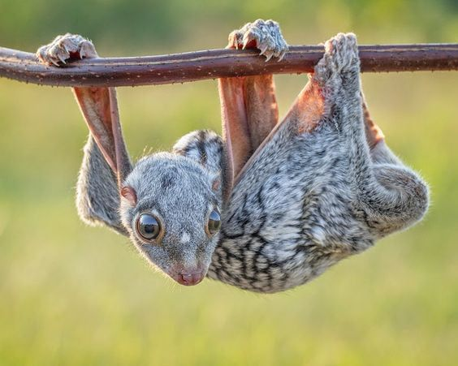

Panthera tigris corbetti is a tiger subspecies living mainly on the Indochina peninsula, found in Cambodia, Laos, Malaysia, Myanmar, Thailand, Vietnam and Southwest China. The name "Corbett tiger" is derived from its scientific name Panthera tigris corbetti, and this name is given to Jim Corbett.
The Indochinese tiger's skull is smaller than the Bengal tiger; The coat has a darker background color with shorter and narrower single stripes. In terms of body size, they are also smaller than Bengal and Siberian tigers. The adult male Indochinese tiger is about 2.55 to 2.85 m (8.37 to 9.35 ft), weighs about 150-195 kg (330-430 lb), and has a maximum skull length of approximately 319-365 mm (13-14 inches). An adult male tiger averages about 2.74 m (9 ft) long and weighs about 180 kg (400 lb). However, some large individuals may weigh more than 250 kg (550 lb). The female adult Indochinese tiger is about 2.30-2.55 m (7.55-8.37 ft) long, weighs 100–130 kg (221-287 lb), with a maximum skull length of 275–311 mm (11-12 inches). An adult female tiger averages about 2.44 m (8 ft) long and weighs about 115 kg (250 lb). After about 3-4 months, the female Indochinese Tiger will give birth, a generation of about five Indochinese Tigers. The newly born Indochinese tiger weighs about 1 kg (2 Ib). Indochinese tigers will breastfeed for the first 18 months, then switch to eating meat. After 18 months, they begin to hunt for themselves.
Panthera tigris corbetti can exist in forests, grasslands, mountains, and hills. However, they prefer most forest habitats such as tropical rain forests, evergreen forests, deciduous forests, tropical and subtropical broadleaf forests.
Panthera tigris corbetti living in solitude in forests with hilly terrain, most of them located along the borders of nations. Access to these areas is often restricted, and few biologists are allowed to enter the field for field research. For this reason, little is known about the status, behavior, or behavior of this subspecies of tiger in the wild. Indochinese tigers mainly hunt large and medium sized ungulates. Deer, wild boars, serow, and large species of the Bovine family like bantengs and immature gaurs cover most of the tiger's diet. However, most large populations of animals in Southeast Asia have been severely depleted by illegal hunting, resulting in "bare forest syndrome" - that is, intact replanting forests such as before, but most animals no longer live there. Some other common prey of tigers, such as the gray cow and the Schomburgk deer, are extinct, and the wild deer, concrete, yellow deer, and wild water buffaloes only appear in a few migrating populations. In such habitats, tigers are forced to hunt smaller prey, such as gills, porcupines, Macaca monkeys and piggers. Such small prey is just enough to meet the energy requirements of a large predator like a tiger, not enough for the tiger to reproduce well. This factor, along with the hunt for tigers for traditional Chinese medicine, is the main cause of the decline in the number of Indochinese tigers throughout its range..
Panthera tigris corbetti mate all year round, but most often in November to early April. After a 3.5-month gestation period, about 103 days, a female tiger is capable of giving birth to seven children. However, on average, a female will only give birth to triplets. Baby cubs are born with their eyes and ears closed until they begin to open and function just a few days after birth. In the first year of life, the mortality rate is 35%, and 73% of deaths in newborn tigers are for the entire litter. The death rate in newborn tigers is usually the result of a fire, flood or being killed by adult tigers. As early as 18 months for some individuals but after 28 months for most cases, the cubs will leave the mother and start hunting and living by themselves. The females of the subspecies reach maturity at 3.5 years of age while males take up to 5 years to reach sexual maturity. Their lifespan can range from 15 to 26 years depending on factors such as living conditions and whether in the wild or captive. Due to their diminished numbers, Indochinese tigers are known to be inbreeding, mating with family members immediately. Inbreeding in this subspecies has resulted in impaired genes, a decrease in sperm count, infertility and in some cases of deformities such as cleft palate, squinting, and cross-eyed.
Panthera pardus delacouri is a subspecies of the native leopards of Indochina and southern China. In the world, Indochina leopards are distributed in Southeast China, Indochina peninsular areas such as Myanmar, Thailand, Laos, Cambodia, Vietnam, they are also found in India and Nepal. In Vietnam, Indochina leopards are distributed in Lai Chau, Bac Kan, Quang Tri, Thua Thien-Hue, Quang Nam and Lam Dong. Leopards are widely distributed in the mountainous regions of Vietnam, but in very small numbers.
Panthera pardus delacouri have long, slender bodies, high legs, they are from 1 to nearly 2 meters long, weighing from 30 to 90 kg, females are usually about the size of about 2/3 of males (weighing from 30 to 70 kg) . In Vietnam, the size of this animal is only smaller than tigers, ranging from 970-1,430mm, head and body length 100–130 cm, tail length from 80–100 cm. Indochinese leopards have a very diverse coat, mostly with a brown or light yellow fur on the back, sometimes pale cream, silvery white on the abdomen, from the head to body and tail, including many large black asteriskas on the abdomen, these patterns have a closed, thick, black outer ring in the center, while the dorsal spots are apricot-shaped, the body has dark brown apricot spots, on the head, the legs and feet and the half of the ventral surface are covered with single spots, the legs are smaller than the body, the head has small black spots, the head is small, the base part of the tail is large, the tail is full of spots On the upper face, the spots tend to be smaller towards the head, larger and have a pale center on the body
In the cat family, Panthera pardus delacouri reputed to be also very large and aggressive, although relatively small in body compared to other large cats, the leopards are terrifying dangerous predators with the legendary snooping ability, mature males. have to fight for territory in the wild. They are in many habitats, habitats, and activities, including many types of mountain forests, mainly in low impact old forests. They can live in many types of forests, primeval forests, secondary forests and scrub near forests, irregular settlements, wide areas of activity at many different heights. Can climb big trees at 2-3m height. They work mainly from dusk to dawn and take a break during the day in the bush, among the cliffs or often resting on the branches of the tree and mostly sleeping in the trees. Indochinese leopards operate individually and live only in the breeding season. Newspaper mother 90–105 days pregnant, each litter usually from 2-3 children. After about 1 year of age, I separated from my mother to live independently.
Their lifestyles and food are different from other big cats, they are capable of hunting on trees as well as on the ground, they eat from small animals like insects, rodents, fish to larger animals like cattle, deer, antelope, wild boar. The leopard's diet consists of wild meat such as wild boar, deer, monkeys, langurs, including small and young cattle such as calves, calves and large rodents. In general, their food is mainly ungulates such as deer, wild boars, but when hungry they eat birds, monkeys, frogs, they can eat any animal sized from bugs. hung up. On average, apricot leopards require 4kg of meat per day, when they catch a large prey that will feed them for several days. They are also known as dog meat eaters and are willing to venture into people's houses to kill dogs, even hunt dogs, so those who keep dogs in areas with leopards often keep dogs in kennels to To ensure their safety. Panthera pardus delacouri is a famous leopard with the ability to stalk when hunting, as well as the ability to achieve speeds up to 90 km / h when chasing normal prey, leopard leopards can run at a speed of 60 km / h but like other predators they choose a target, hiding as close as possible and stalking. When attacking large prey they can jump on the back of the animal from the tree, biting the neck to bite the prey to death, then they release the prey hanging from the tall tree to eat, avoiding being robbed by other species. part. They climb very well and often hide prey from trees. The common sight of this leopard is a good climbing species and often hunts at night and during the day in a deserted place, releasing prey to a safe place on the tree to avoid other predators. Panthera pardus delacouri can snoop on and attack swiftly on small herds and slaughter poultry in a flash, in Bospha village that once had leopard leopards eating 13 geese per week and wild beasts. Sitting and eating geese near the house, he also captured a series of chickens, ducks, geese and dogs, causing confusion in the residential areas. The words about an animal as big as a 1-year-old calf, weighing about 1.2 quintal, weighing gray, heads reaching more than 1m tall, two eyes as bright as light bulbs rushing to catch heavier ducks 3.5 kg, the scary thing is that the five geese with a total weight of about 18 kg did not have any feathers lingering, only saw small blood stains mixed in the mud. A quicker butchering story, in the dark, there were two sleeping geese sleeping on a shelf next to the kitchen wall, when they heard a loud noise hitting the edge of the plank, only a few bloodstains were left, the two geese disappeared, dogs must be frightened too, many dogs in the area when they smell the beast, they will run away and tremble.
Neofelis nebulosa is a medium-sized, whole to 60 to 110 cm (2 '- 3'6 ") family of cats and weighs about 11 - 20 kg (25 lbs 4oz - 44 lbs). Brown or hung leopard fur, "elliptical" large "points, irregularly shaped, dark edges that look like clouds: hence the scientific name and some foreign languages refer to" clouds. "Based on the skull structure, The distinctive species is the only member of this genus that is an endangered species.
Neofelis nebulosa has a well-toned and well-proportioned body, and canines are one of the longest fangs of any cat in existence. This leads to the theory that they hunt large mammals that live on the ground. Although the behavior of the cheetah in the wild is unknown, the cloud leopard primarily hunts tree mammals, namely apes, pig-tailed macaques or Proboscis monkeys, in addition to animals that have other breasts like deer, porcupines or birds and cattle. Because the food source is mainly tree animals, clouded Leopard is good at climbing. With four short and strong legs, wide soles with sufficiently sharp claws, the climbing talent of a cloud leopard is hard to match. In order to keep balance when on a high tree, the cloud has a tail with a length of approximately the whole body. Surprisingly, they can move when hanging upside down, under branches and leaning trunks.
They live in areas of southern China, the eastern Himalayas until as far as Southeast Asia as well as the Indonesian archipelago. They are thought to be extinct in Taiwan. Preferred areas are tropical and subtropical forests with elevations up to 2,000 meters (6,500 ft), but sometimes they are also seen along mangrove marshes or grasslands.
Neofelis nebulosa arboreal, and has a squirrel-like agility similar to the South American jungle cat. Previously, clouded leopard was popular in many countries in Asia, now in captivity, it has the habit of hanging itself with its hind legs and long tail swinging to keep balance, hanging upside down. down on the trunk, now very little. Very little is known about their behavior in the wild, but it is assumed that they are predominantly tree-based animals and like to hunt prey by jumping down from a tree. Their whereabouts are unknown because of their secret nature. Because there is no evidence of the habit of creating a herd like lions, it is thought that they live alone. Perhaps they only approach other clouded leopards when engaging in breeding or raising children. Previously, it was thought that they were only active at night, but now they have been seen walking even during the day.
Neofelis nebulosa females give birth from 1 to 5 premature babies approximately 85 to 93 days after pregnancy. The young are weak and unopened, just like the young cats of other cats. Unlike an adult, the spots of the young are dark. After about 10 days of birth, they can see and be active after about 5 weeks, maybe after about 10 months of age, they become independent individuals. Clouded Leopard reaches reproductive age after 2 years and children can become pregnant once a year. The captive leopard can live up to 17 years: in the wild, they can have a shorter life span. These parameters suggest that clouded leopard could grow in numbers with good management. Despite these parameters, in the early stages of the reproductive program in captivity has achieved little achievement, mainly due to the female or often killed by aggressive males. However, the experience of the broodstock breeders shows that clouded pairs are brought up close in the early stages to achieve satisfactory results in mating..
Cuon alpinus is a carnivore belonging to the Dog family (Canidae), the only member of the genus Cuon. The fire wolf is a large pack animal that resembles the African wild dog and the gray wolf, when following the pack, the fire wolf is very fierce and has a vicious predatory method, and can cause danger. endangered to other beasts like tigers and leopards/p> 
Cuon alpinus is a large predator. The fire wolf body is 90 cm long, the tail is longer than 30 cm (total length up to 1.2m), another parameter is the fire wolf dog length from 895 - 918mm, tail length: 308 - 327mm, feet posterior length from 125 - 167mm. Fire wolves weigh from 10 to 25 kg, of which the male weighs about 4.5 kg heavier than the female, some people in Northwest Vietnam said that some fire wolf weighs about 30 kg, the big one. up to 40 kg the lightest, about 08 kg. Cuon alpinus has a deep reddish-yellow coat in the style of buckskin and very thick fur, has a short black muzzle, round ears, pale belly, legs and tail turn brown and black, small double-rooted base, ruffled at the end, their bodies thicker and taller than their dogs. Their meat is fishier than domestic dog meat, tough and pale, fire wolf urine is toxic. They are capable of jumping up to 3.5 m high and jumping as far as 6 m. Even though the fire wolf's teeth were not really pointed, a bit longer than the canine teeth, they were not sharp at first glance but when they bit their prey they actually turned into razors. The fire wolf's teeth could be said to be sharper than a razor, tearing off both buffalo and cow leather
Their breeding season is usually from November to February (next year). The gestation period is about 9 weeks, with 5-10 babies each. The red wolf lives in a very organized pack, if any wolf is injured in the pack to bring food and share it, the puppy in the pack is very close.When a wolf dies, the wolves The other will take care of its children.
Cuon alpinus is a real living predator. The food of the red wolf is animals such as deer, deer, muntjac, wild boar, cattle, domestic animals and large birds, poultry, etc. Many times this wolf also attacks villages to find food, and it attacks buffaloes, cows, pigs, chickens, goats and horses. However, human flesh is not a favorite of this species. They are nocturnal, but are active in the early mornings and evenings (sometimes during the day) and often live in forests, often reside and active in old forests, and when hunting prey may come close. village. They live in pairs or groups of 5 - seven, when hunting, they can join a herd of 10 - 15 to 20, even 50. A red wolf may be harmless, but a whole flock of red wolves is a terrible threat to many large animals such as wild boars, gaurs ... Fire wolves are predators of the cruel and sinister pack. , they are very fierce, with howling. Once closed, they kill their prey with very vicious and bizarre attacks, the fire wolf's teeth now more than razors, tearing both buffalo and buffalo hide. They both run and howled, bared their fangs very fierce. For large animals such as buffaloes and cows, they use tactics to surround and play with the meat in the buttocks, in the thighs causing buffaloes and cows to lose a piece of meat in the buttocks, blood dripping, spreading everywhere until the buffaloes and cows lost much blood, exhausted and collapsed, Cuon alpinus continued to attack the other. Whenever they bite and kill the buffalo, they will bite through the buttocks, eat all the meat from the buttocks, then dig the whole thing to eat, then give up to attack the others, they tear, hook the buttocks and tear the thigh meat out to eat. The attack of the red wolf was so familiar, they fell down and tore off their prey and pulled their fervor of heart to beat the cup first. The wolf only eats the buttocks, thighs and large intestines of large cattle, but the calves chew their bones and the crowded flames can eat the whole cow in time. short.
Nyctereutes procyonoides is an animal belonging to the Dog family. Badgers are indigenous to East Asia. Dog badgers are native to China and Japan. However, since the 1940s, and because of its beautiful plumage, has been introduced in the Caucasus, Ukraine and Belarus, so today is part of the permanent fauna of western region of the former Soviet Union, from which has spread to Scandinavia, Romania, Poland, Czech Republic, Germany, Switzerland and France. Although very similar to American cat bears (Procyon lotor), they are not closely related.
Nyctereutes procyonoides weighs 3-5kg, body length 540 - 610mm, tail 162 - 180mm, Head small, snout short and slightly pointed. Short legs. The coat is long and coarse, with a pale yellow, gray tip, Head, tip and four hind legs, the tail is one third as long as the body. Hairy tail, gray.
Nyctereutes procyonoides living on shrub savannas, along shifting fields, along streams. Living alone, foraging from dusk till midnight on the fields, along streams, on the banks of water fields. Quiet activities and be cautious. Badger dogs eat earthworms, locusts, grasshoppers, shellfish, clones and some food crops, fruits and seeds in their living areas. Badgers breed in the months 4, 5, 6. 60 days pregnant, each litter 3-4 children in the nest to make themselves in the bush. Juveniles become sexually mature after 10 months.
Ursus tibetanus, also known as the Tibetan black bear, the Himalayan black bear, or the Asian black bear, is a medium-sized, sharp-colored, black bear with a distinctive "V" shape in white or cream on its chest. The bear is closely related to the American black bear, believed to have a common ancestry in Europe.
Ursus tibetanus has a living area that extends from east to west Asia. They can be found in the hilly forests of East Asia and South Asia, including a range from Afghanistan, Pakistan, to northern India, Nepal, Sikkim, Bhutan, Southeast Asia, as far as northeastern China, and even Taiwan, Japan. They can live in areas up to an altitude of 3,000 m (9,900 ft). In some areas, horse bears live in the same area as brown bears (Ursus arctos), which are bigger and stronger. However, Ursus tibetanus has an advantage over the opponent because of its good climbing ability that helps them get fruits and nuts on the tall tree. The habitat of the horse bear has a place that overlaps with the panda like the Cenyong Reserve, China. The horse bear race found in Taiwan is the Taiwan black bear breed.
Ursus tibetanus has a length of about 1.30 - 1.90 m. Males weigh about 110 - 150 kg and females lighter, about 65 - 90 kg. Bear's life span is about 25 years. Ursus tibetanus is an omnivore which feeds on fruits, berries, grass, seeds, nuts, molluscs, honey and meat (fish, birds, rodents as well as animals). However, as with other bears in the Bear family today, nuts and grass are no longer viable in their diets due to the effects of omnivores. The black bear is more carnivorous than its cousin, the American black bear; However meat is only a small part of the diet. Ursus tibetanus is also known as a very aggressive animal to humans (much more so than American black bears); There are numerous records of fatal bear attacks. This is probably primarily because the horse bear lives close to humans and attacks when it is startled.Ursus tibetanus is listed in the IUCN Red List (World Conservation Union) as vulnerable species. lesions among endangered animals. They are threatened mainly by deforestation and loss of habitat. Sun bears are also killed by farmers because of their threat to cattle and poultry, and they are also unpopular because their habit or barking reduces the value of the crop. Another problem faced by horse bears is that they are often hunted for bile, a substance used in Chinese medicine. Since China banned the hunting of horse bears since the 1980s, bear bile has been supplied to consumers by special bear farms, where bears are kept in cages and bear bile is withdrawn periodically. bile extraction under syringes after anesthesia. Supporters of this claim that without such farms, due to the high demand for bear bile, poaching will increase and make the already-endangered bear even more dangerous. in genocide disaster. Critics argue that this is cruel and inhumane, or synthetic bear bile (ursodeoxycholic acid), is just as effective as bear bile and is actually much cheaper..
Helarctos malayanus Found mainly in tropical rainforests in Southeast Asia. Sun bears have a length of about 1.2 m (4 ft) and a height of about 0.7 m - so they are the smallest of the Bear family. It has a short tail, about 3–7 cm (2 inches) and weighs no more than 65 kg (145 pounds). Males are slightly heavier than males.
Unlike other bears, their fur is short and silky. This is probably because their habitat is hot and humid lowlands. Their coat color is dark black or dark brown, except for the chest has a yellowish-orange color in the shape of a horseshoe or U-shaped. has a sickle-shaped claw, relatively light in weight. They have big feet and bare feet, probably to aid climbing. Their feet are inward, so their steps are like a bow, but they are good climbing animals. They have short, round ears and a short muzzle. As a predominant nocturnal animal, sun bears prefer sunbathing or daytime breaks on large branches about 2-7 meters above the ground. Because they spend a lot of time on trees, bear dogs can sometimes cause heavy losses for crops. They are considered coconut and cocoa spoilers in plantations. This behavior is responsible for reducing the population of dog bears as much as hunting for their fur and honey for use in Chinese medicine. Dog food varies widely and includes small vertebrates such as lizards, birds, or other mammals, as well as fruits, eggs, termites, young tops of coconut trees, and honey. , berries, shoots, insects, tree roots, fruits of cocoa or coconut. Their powerful teeth can break coconuts. Most of the bears bear food because of their sense of smell, because their eyes are poor.
They live in the eastern Himalayas (Himalayas) to Sichuan in China, as well as extending south to Myanmar, part of the Indochinese peninsula and Malaysia.
Because Helarctos malayanus do not hibernate, they can breed year round. They usually produce two offspring with a birth weight of about 280 - 340 g (10-12 ounces) each. The gestation period is about 96 days, but they breastfeed for about 18 months. Bears reach adulthood after about 3-4 years, and they live to 28 years in captivity.
Lutrinae is the typical species of the otter subfamily, also the typical freshwater Lutrinae
Lutrinae is usually the only otter in its range, so it should not be confused with other mammals. Usually, this species is 57 to 95 cm (23–37 in) long, the length excluding the tail being 35–45 cm (14–18 in). Weight from 7 to 12 kg (15.4-26.4 lb), sometimes adult males reach 17 kg (37 lb). According to a reliable but unverified source, the male weighs a record 24 kg (53 lbs).
Lutrinae is usually the most widely distributed Lutrina, from Asia to Africa and most of Europe, so it is also known as the European otter in English. It is considered extinct in Liechtenstein and Switzerland. This species is common in Latvia, along the coasts of Norway and England.
Cynocephalidae is the name of a group of flying mammals that live on trees in Southeast Asia. The two remaining flying ferrets together form the Cynocephalidae family and the Dermoptera order. They are the best gliding mammals, using a stretch of skin between their limbs to glide from high to low.
They eat leaves, twigs, buds and flowers (they adapt to digesting leafy plants) and sometimes eat more sap and fruit.
Cynocephalidae is distributed on the islands of the Sunda continental shelf in Southeast Asia and throughout the southern mainland, including Central and South Vietnam.
The front double incisors have up to 20 protrusions that are like a comb (called a comb) coming from the root. The function of this comb is still a mystery, but it can be used as a scraper or filter when eating or helping with brushing.They weigh 1-1.75kg and the length of the head and body is 34-42cm and the width of the film is 70cm. The female is slightly bigger than the male.
The offspring are not fully developed and continue to be kept in the womb even when flying. The young weaned at six months of age. During breaks, the mother can fold the diaphragm into a small pouch near the tail and also the place to hold the calf.
8 Ton That Thuyet, My Dinh, Tu Liem,
Ha Noi, Viet Nam.
0966469746 (Do Van Huan)
0666729716 (Nguyen Minh Nghia)
0522697743 (Duong Thanh Binh)
0849818969 (Le Van Phuong)
0373485924 (Nguyen Thanh Lam)
KawasakiZoo@gmail.com